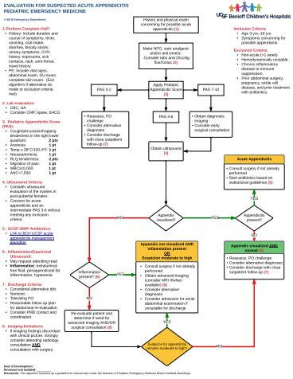

Hosted on idmp.ucsf.edu, no login. 3 pages, 689 KB
The following clinical algorithms were developed for management of pediatric patients with suspected or established appendicitis:
Follow algorithm below for initial management:
Follow algorithm below for patients with perforated appendicitis:
Pediatric Appendicitis Clinical Algorithm Antimicrobial Dosing:
| Antimicrobial | Appendicitis (All Types) Pre-operative and Intra-operative Dosing | Gangrenous Appendicitis Post-operative Dosing | Perforated Appendicitis Post-operative Dosing | ||
| Antimicrobial | Pre-op dosing (beginning at diagnosis) | Pre-incisional dosing | Intra-op re-dosing interval | Gangrenous Appendicitis Post-operative Dosing | Perforated Appendicitis Post-operative Dosing |
| Amoxicillin/Clavulanate (max: 875 mg Amoxicillin/dose) | N/A | N/A | N/A | N/A | 22.5 mg/kg/dose Amoxicillin component PO q12hrs |
| Cefoxitin (max: 2 g/dose) | N/A | 40 mg/kg/dose IV x1 within 60 minutes prior to incision, unless Ceftriaxone given within prior 8 hrs | q2hrs | N/A | N/A |
Ceftriaxone (max: 2 g/dose) | 50 mg/kg/dose IV q24hrs | N/A | N/A | 50mg/kg IV x 1 dose given 24 hrs after prior dose (may administer post-op dose early to facilitate discharge if >=8 hrs since prior dose) | 50 mg/kg/dose IV q24hrs |
| Ciprofloxacin
(max IV: 400 mg/dose) (max PO: 500 mg/dose) | 15 mg/kg/dose IV q12hrs | 15mg/kg/dose IV x 1 within 120 minutes prior to incision, if >=12 hours from prior dose | N/A | 15 mg/kg/dose IV q12hrs x 2 doses starting 12 hrs after prior dose | 15 mg/kg/dose IV q12hrs
OR 15mg/kg/dose PO BID |
| Metronidazole
(max q24 IV: 1.5 g/dose) (max PO: 500 mg/dose) | 30 mg/kg/dose IV q24hrs | N/A | N/A | 30 mg/kg/dose IV x 1 dose given 24 hrs after prior dose | 30 mg/kg/dose IV q24hrs
OR 10 mg/kg/dose PO TID |
| Piperacillin/tazobactam (Zosyn) (max: 4 g Piperacillin/dose) | N/A | N/A | N/A | N/A | 80mg/kg/dose Piperacillin component IV q6hrs |
DEVELOPMENT AND REVIEW:
Initiated 2019. Content development led by Pediatric Antimicrobial Stewardship Program at BCH Oakland with collaboration by Pediatric Antimicrobial Stewardship Program at BCHSF, Pediatric Surgery and Pediatric Emergency Medicine programs at BCH Oakland and BCH SF.
Approved by UCSF Committee on Pharmacy and Therapeutics 5/14/19. Please direct questions about algorithm content to prachi.singh@ucsf.edu and rachel.wattier@ucsf.edu.
Updated 2024. Content developed led by Pediatric Antimicrobial Stewardship Program at BCH in collaboration with Pedaitric Surgery and Pediatric Emergency Medicine programs.
REFERENCES:
Snelling CM et al. Minimum postoperative antibiotic duration in advanced appendicitis in children: a review. Pediatr Surg Int 2004; 20: 838-45.
Wang S et al. Metronidazole single versus multiple daily dosing in serious intraabdominal/pelvic and diabetic foot infections. Journal of Chemotherapy 2007; 19(4): 410-416.
Coakley BA et al. Postoperative antibiotics correlate with worse outcomes after appendectomy for nonperforated appendicitis. J Am Coll Surg 2011;213:778-83.
St. Peter SD et al. Single daily dosing ceftriaxone and metronidazole vs. standard triple antibiotic regimen for perforated appendicitis in children: a prospective randomized trial. Journal of Pediatric Surgery 2008; 43: 981-985.
Bratzler DW et al. Clinical practice guidelines for antimicrobial prophylaxis in surgery. American Journal of Health-System Pharmacy 2013; 70(3): 195-283.
Yardeni D et al. Single daily dosing of ceftriaxone and metronidazole is as safe and effective as ampicillin, gentamicin and metronidazole for non-operative management of complicated appendicitis in children. Pediatric Therapeutics 2013; 3(5): 177-179.
Van Rossem CC et al. Duration of antibiotic treatment after appendectomy for acute complicated appendicitis. British Journal of Surgery 2014; 101: 715-719.
Romano A et al. Simple acute appendicitis versus non-perforated gangrenous appendicitis: is there a difference in the rate of post-operative infectious complications? Surgical Infections 2014;15: 517-20.
Shbat L et al. Benefits of an abridged antibiotic protocol for treatment of gangrenous appendicitis. J Ped Surg 2014;49: 1723-5.
Sawyer RG et al. Trial of short-course antimicrobial therapy for intraabdominal infection. NEJM 2015; 372(21): 1996-2005.
Kronman MP et al. Extended- versus narrower-spectrum antibiotics for appendicitis. Pediatrics 2016; 138(1).
van Rossem CC et al. Antibiotic duration after laparoscopic appendectomy for acute complicated appendicitis. JAMA Surgery 2016; 151(4): 323-329.
Bae E et al. Postoperative antibiotic use and the incidence of intra-abdominal abscess in the setting of suppurative appendicitis: a retrospective analysis. Am J Surg 2016;212: 1121-5.
Berrios-Torres, SI et al. Centers for Disease Control and Prevention guideline for the prevention of surgical site infection. JAMA Surgery 2017; 152(8): 784-791.
Mazuski JE et al. The Surgical Infection Society revised guidelines on the management of intra-abdominal infection. Surg Inf 2017;18:1-76.
Cessation of Antibiotics for Complicated Appendicitis at Discharge Does Not Increase Risk of Post-operative Infection Russell, Katie W. et al. Journal of Pediatric Surgery, Volume 59, Issue 1, 91 - 95